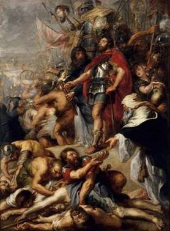
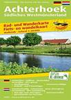

> nieuwsbrief
> 36e jg. - Xe trimester JAAR
Hernieuwen
ledenbijdrage voor 2019
Alhoewel
de hernieuwing van de ledenbijdragen voor 2019 andermaal vlot
verliep blijven enkelen het blijkbaar moeilijk hebben om
spontaan per kerende op onze eerste oproep te reageren.
Misschien wachten ze af wat het nieuwe jaarboek brengen zal? Met
dit nummer van onze Nieuwsbrief
weten ze dit dan. Toetreden kan nog steeds, mits overboeking
van de ledenbijdrage. Even herinneren: de minimumbijdrage blijft
ongewijzigd en bedraagt 29 . In ruil daarvoor verzekeren we u
de stipte toezending van het nieuwe Jaarboek De Nederlanden
extra muros het 41e al dat in de voorbije meimaand
verscheen en van de vier nummers van ons kwartaalblad Nieuwsbrief Zannekin.
Vanaf het bedrag van 35 boeken we u met dank als steunend lid.
Vereffening graag via ons rekeningnummer iban BE13 4648
2202 5139 bic:
KREDBEBB t.n.v.
Vereniging/Stichting ZANNEKIN, Paddevijverstraat 2, B.8900
Ieper.
De Heilige Godelieve
Een aantal jaren geleden werd in het
Frans-Vlaamse Millam een bord geplaatst ter ere van Sint-Mulders
of de Heiige Mildreda nabij de prachtige kapel naar haar naam genoemd in
een glooiend dal. Dit was een samenwerking van de Stichting
Zannekin met EUVO en het Forum van Vlaamse Vrouwen.
In het najaar werken EUVO en de stad Gistel samen met ons aan
de plaatsing van een bord ter ere van de Heilige
Godelieve met de hierna vermelde tekst:
Godelieve (geboren in Heimfriedswilder
°circa 1045 - overleden in Gistel 7 juli 1070) zag het
levenslicht in de nabij gelegen hoeve van Londesvoorde. Als
dochter van de Vlaamse edelman Heimfried, heer van
Heimfriedswilder, werd Godelieve uitgehuwelijkt aan
Bertulf, zoon van de kasteelheer van Gistel (West-Vlaanderen).
Doch ze werd van bij haar komst in Gistel
vooral mede door haar jaloerse schoonmoeder mishandeld.
Daarop nam ze de vlucht naar haar geboorteplaats
Heimfriedswilder. Door een geruststellende tussenkomst van de
bisschop van Doornik Radbod II zou ze onder beschermende
voorwaarden naar Gistel terugkeren, waar ze desondanks en
desalniettemin kort na haar aankomst met een halsdoek werd
gewurgd en in een waterput gegooid.
Bertulf kwam na deze gruwelijke gebeurtenis
tot inkeer. Hij werd zelfs monnik. Mirakels tekenden daarna
Goedelieves leven wat de Doornikse bisschop deed beslissen haar
heilig te verklaren op 30 juli 1084.
Haar feestdag is op 6 juli. Drogo, een
monnik uit Sint-Winoksbergen, beschreef haar leven in 'De Vita
Godeliph'.
Ze wordt aangeroepen voor o.m. genezing van
keel- en oogziekten.
Jaarboek De Nederlanden extra muros 41 (2019)

Ook dit 41e Jaarboek De Nederlanden extra muros brengt
weer een breed palet aan bijdragen over de randgebieden van onze
Lage Landen die deel uitmaken van ons geschiedkundig erfgoed. En
als steeds openen we ook deze editie met de korte bijdrage die
zowat in een notendop het programma van Zannekin verwoordt.
Luc Dequeker staat
stil bij de symboliek die verweven zit in De Romaanse doopvont van
Noordpeene, terwijl Jan van Tongeren
toelichting brengt bij De Doornikse doopvonten in Zedelgem en
Winchester.
Petrus Dathenus en
Nicasius Ellebodius,
twee Kasselse zonen, kregen in 2018
eindelijk een memoriebord in hun geboorteoord. Wido
Bourel schetste toen hun leven en verdiensten. In
de rubriek achteraan leest u een verslag van de
onthullingsplechtigheid en hier alvast Widos toespraak.
Johan Hellinx
onthult in zijn De Franse Revolutie
gezien vanop de zijlijn: het beeld van de Franse bezetter in
enkele historische romans van Clara Viebieg en André Demedts
de parallelle en uiteenlopende tijdslijnen in het oeuvre van beide
auteurs.
Wim van Heugten
besteedt aandacht aan leven en werk van Friedrich Gorissen,
de Nederrijnse historicus, die reeds in het allereerste Zannekin Jaarboek
getuigde van het Nederlandse wezen van zijn geboortetreek.
Omwille van de verstrekkende historische
betekenis van zijn toenmalig (1975) getuigenis hernemen we Friedrich
Gorissens Nederland aan de
Nederrijn, Batavia extra muros.
In Grijze vrouwen voor
Gelres hertogen; het klooster Gravendaal bij Goch
laat Ruud
Bruijns ons kennis maken met het Huis van Gelre en
de cisterciënzerorde die mee aan de oorsprong lag aan het idee om
van Gravendaal het begrafenisoord te maken van dit gravengeslacht.
Henk de Boer
verrast ons met zijn breed essay over Holland in Pruisen, een
mythe ontraadselt. Mede aan de hand
van Vondels Gysbrecht van
Amstel verkent hij voor ons het toenmalige roerige
tijdsbestek van onze Nederlandse geschiedenis, ten gevolge waarvan
Gijsbrecht de wijk diende te nemen. Vondel suggereerde dat Ghy (van Amstel) trekt naet vette land van
Pruissen
// Ghy zult in dit gewest een stad, Nieuw Holland,
bouwen
. Maar omtrent de geschiedenis van Pruisisch
Holland is daarmee niet alles onthuld toont de auteur ten
overvloede aan.
Heike Düselder
tekende al aanwezig in het Zannekin Jaarboek 15 (1993) met een
essay over een Oost-Fries thema. Thans tekent ze present met een
bijdrage over de Culturele betrekkingen
tussen de Nederlanden en Noordwest Duitsland in de context
van de confessionalisering en het gereformeerde
Gemeenteleven, waarbij de taaltoestanden in
het Oost-Friesland van de 18e eeuw een normerende rol speelden.
Met zijn Laatmiddeleeuwse
Amsterdamse kerkelijke kunst in een Nederrijnse stadje: de
monstrans in de Sint-Niklaaskerk van Kalkar
duikt Jan van Tongeren voor de tweede maal
op in deze jaarboekeditie. Hij verhaalt hoe de familie van Jacob
Claesz Brouwer vanuit Amsterdam in Kalkar belandde en met hen de
monstrans en ook tal van andere kerkelijke kunstwerken.
Op het verhaal over de Doornikse
doopvont van Noordpeene en de rede bij de onthulling van de
memorieplaat voor Dathenus en Ellebodius te Kassel na, komen de
Franse Nederlanden er in dit jaarboek eerder bekaaid van af. Leo
Camerlynck brengt in deze evenwel wat evenwicht
met zijn bijdragen over Johannes Despauterius
uit Komen en met Belle (Bailleul) in
Frans-Vlaanderen. Naast een terugblik op de
geschiedenis van het stadje stippelde hij daarbij meteen een
wandelroute uit die de bezoeker beslist van dienst kan zijn bij de
verkenning van het ook toeristisch aantrekkelijke Belle.
Met dezelfde auteur verwijlen we
tenslotte ook nog even bij de dichter van het In
Flanders Fields, John MacCrae, vooraleer met
de Kroniek
en boekbesprekingen ons jaarboek traditioneel af te sluiten.
______________________
N.a.v.
Jaarboek
De Nederlanden extra muros 41 (2019).
Gen. 208 p. Ledenprij 29 ; niet-leden 35 . Te bestellen via
overschrijving van dit bedrag op rekening BE13 4648 2202 5139
t.n.v. Vereniging/Stichting ZANNEKIN, Paddevijverstraat 2,
B.8900 Ieper
Zannekin-Ontmoetingsdag te Leiden op zaterdag 19 oktober
Dagprogramma:
10.30-11.00 uur:
ontvangst met koffie en een gebakje in Stadscafé Van der Werff,
Steenstraat 2, 2312 BW Leiden.
11.00-11.10 uur:
opening en welkomstwoord door Leo Camerlynck.
11.10-11.45 uur:
lezing door de Leidse historicus Cor Smit.
11.45-12.00 uur:
vragen.
12.00-12.45 uur:
Lezing. door Dick Wortel over Zuid-Nederlandse vluchtelingen
waaronder Frans-Vlamingen in Leiden.
12.45-14.00 uur:
Lunch.
14.00-16.00 uur:
Wandeling door de stad langs punten die betrekking hebben op de
Vlaamse en Waalse immigratie.
16.00-17.00 uur:
Afsluitende borrel in Het Pakhuis, Doelensteeg 8, 2311 VL
Leiden. Via een Rembrandt-route kan naar het NS-station Leiden
Centraal worden gewandeld.
Deelnamebijdrage: de kostprijs van
deze dag beloopt alles inbegrepen (ontvangst, lunch, lezingen,
toegangen, afsluitborrel): 40 per persoon; (niet leden 50
per persoon) en dient vereffend te worden bij inschrijving.
Inschrijven kan tot uiterlijk 15 oktober via het
Zannekin-secretariaat, Paddevijverstraat 2, B.8900 Ieper
(e-adres: maurits.cailliau@skynet.be
)
Parkeren binnen de singels is in Leiden erg
duur. Alternatieven: Parkeergarage bij Molen De Valk.
Parkeermogelijkheid ook aan de Haagweg. Ook mogelijk: gratis
parkeren bij NS-station De Vink en vandaar met de trein (duur: 4
min.) of met de bus (lijnen 1, 2, 3 en 4 naar NS station Leiden
Centraal). Leiden is uitstekend te bereiken met de trein.
Omtrent
het parkeren vormt
onderstaande tip misschien wel een nuttige aanvulling: Aan de
noorduitgang van station Leiden Centraal ligt de wijk
Houtkwartier tegenover het Leids Universitair Medisch Centrum.
Op zaterdag en zondag is het vrij parkeren in deze
wijk. Lopen daar vandaan naar b.v. Stadscafé Van der Werff
vraagt slechts 10-15 minuten.
Achtergondinformatie omtrent onze dag
in Leiden
Méér uitgebreide achtergrondinfo omtrent
onze Ontmoetingsdag te Leiden op 19 oktober zal te lezen zijn in
de Zannekin-Nieuwsbrief
4/2019, die in de laatste dagen van september verstuurd zal
worden. Noteer ondertussen alvast de datum van 19 oktober!
Dit
jaar is het 180 jaar geleden dat op 19 april het Verdrag van
Londen werd gesloten. Na de val van Napoleon in 1815 behoorde het
Grote Limburg tot de Verenigde Nederlanden. Het was een
samenvoeging van wat voorheen de provincie Beneden-Maas was met
delen van het voormalige Roerdepartement. In feite: een
lappendeken van allerhande gebieden en gebiedjes, waarvan het
grootste het voormalige graafschap Loon was. Slechts een klein
stuk van het oude hertogdom Limburg (nu grotendeels in Luik)
behoorde er toe. Maar toch wilde koning Willem l dat de oude
historische naam bewaard bleef en bijgevolg werd het allemaal
Limburg genoemd.
Aan
de revolutie van 1830 deed Limburg nauwelijks mee, behoudens
enkele lokale incidenten in de steden. Eigenlijk stond Limburg dus
aan de Belgische kant. Enkel Maastricht bleef hardnekkig trouw aan
de Oranjes. Pas in 1839 koos Willem l eieren voor zijn geld en
ging akkoord met het Verdrag van Londen, dat bepaalde dat België
het westelijk deel van de provincie Luxemburg kreeg (maar afstand
moest doen van zijn eisen op Zeeuws-Vlaanderen, iets dat men na
1918 plots vergeten was), terwijl het oostelijk deel naar
Nederland ging. In Nederland werd wel geprotesteerd tegen die
regeling, maar dat was van voorbijgaande aard. Als norm werd de
loop van de Maas aangehouden, behalve rond Maastricht, waar
Nederland een strook grond aan de linkeroever van de Maas wist te
verwerven. Om juist te zijn: 2,3 km. Zo ver konden de kanonnen in
die tijd schieten, zodat het zeker was dat België nooit de
vestingmuren van die stad zou kunnen beschieten. Men sprak dan ook
over de kanongrens. Toch bleef de toestand nog vele jaren erg
onduidelijk. Lommel, dat vroeger altijd Brabants was geweest en
sinds de scheiding van de 17e eeuw tot de Noordelijke Nederlanden
had behoort, werd Belgisch, alsook het gehucht Kinrooi. Het duurde
nog tot 1843 vooraleer de grens in detail werd vastgelegd (we
weten dat het onafhankelijke Moresnet daar zijn bestaan aan te
danken heeft). Ja, zo ontstaan volkeren!
Ter
herdenking van die scheiding organiseerde de stad Maastricht in
het Gouvernement aan de Maas een tentoonstelling: Gekaderd,
waaraan ook het Belgisch-Limburgs provinciebestuur meewerkt en die
liep tot 30 augustus.
De Belgische
journalist Marc Metdepenningen hanteert bijwijlen een
vlijmscherpe pen als het er op aankomt mistoestanden aan te
klagen. De zaken rond Dutroux, Fourniret, Monique De Wael, alias Misha
Defonseca, Dieudonné, volgde hij op de voet. Meestal schrijft
hij hierover voor het dagblad Le Soir.
De
journalist is opnieuw in zijn pen gekropen om iets totaal
anders, namelijk een Frans-Waals gebakkelei rond een meesterwerk
van Pieter-Paul Rubens, Judas Macchabees zege, letterlijk en
figuurlijk uit de doeken te doen.
Het is
bekend dat een groot deel van de Vlaamse en in mindere mate
Hollandse schilderkunst van de 15e tot de 18e
eeuw zich in het buitenland bevindt. Koplopers zijn Spanje,
Oostenrijk, Italië, Rusland en
Frankrijk.
Werden deze
kunstwerken in het verleden op oneerlijke wijze verworven?
Grotendeels niet omdat veel werken in opdracht werden
uitgevoerd. Maar toch zijn een niet te verwaarlozen aantal
kunstwerken buit gemaakt door veroverende buurlanden. Frankrijk
maakt op dat vlak geen al te beste beurt. Een staaltje van dit
eeuwenoud gekibbel over restituties van kunstwerken wordt
voortreffelijk geïllustreerd in dit artikel over een Franse
staat die anno 2014 weigert een te Doornik gestolen Rubens terug
te bezorgen.
Opmerkelijk
hierbij is dat het gekibbel plaatsvindt in aanwezigheid van twee
politici, een Franse minister Aurélie
Fillipetti en een Waalse minister Rudy Demotte, die beiden tot
de Parti Socialiste behoren.
Hierna volgt het
volledige artikel.
La France refuse
de restituer le Rubens volé à Tournai
Marc Metdepenningen
Le «Triomphe de Judas
Macchabée», volé par les révolutionnaires en 1794, ne reviendra
pas à Tournai.
La ministre française
Fillipetti sappuie sur un accord de 1815 pour conserver le
Rubens.
Le ministre de la Culture française Aurélie Fillipetti
(PS) refuse, dans un courrier que vient de recevoir le
ministre-président wallon Rudy Demotte (PS), de restituer à la
cathédrale de Tournai le «Triomphe de Judas Macchabée», une
uvre de Pierre-Paul Rubens dérobée en 1794 par les troupes
révolutionnaires françaises et hébergé depuis 1801 au Musée des
Beaux-Arts de Nantes. Ce tableau fait partie, avec "La
délivrance des âmes du Purgatoire", d'un ensemble commandé en
1635 au peintre Pierre Paul Rubens par l'évêque de Tournai, et
financé par les paroissiens.

De
betreffende Rubens
Les deux tableaux avaient été emmenés par les troupes
françaises. Lopiniâtreté des ecclésiastiques tournaisiens avait
permis de récupérer le Purgatoire en 1815. Tournai navait
cessé, jusquen 1832 de demander à la France le retour du Judas
Macchabée, inséparable du Purgatoire. Les Français firent la
sourde oreille à ces demandes, se réfugiant derrière le principe
dinaliénabilité du patrimoine culturel français, fut-il volé.
Une résolution, initiée par
le député Richard Miller, ancien ministre de la Culture de la
Fédération Wallonie-Bruxelles, avait été votée en 2011 par le
Parlement de la Fédération. Elle exigeait des autorités
dentreprendre toute démarche utile afin de récupérer ce bien
culturel unique.
Le ministre de la Culture français Frédéric Mitterrand
ny avait réservé aucune suite, pas plus que celle qui lui
succéda, Aurélie Fillipetti.
Dans le courrier quelle vient dadresser à Rudy
Demotte, elle fait savoir que «la France ne peut donner suite» à
cette demande au motif que la question de la restitution
duvres dérobées par les révolutionnaires aurait été définitivement
réglée par la Conférence de Vienne de 1815. Un accord auquel
la Belgique ne pouvait être partie, dès lors quelle
nexistait pas.
Le cabinet de Rudy Demotte indique quun examen
juridique du dossier va être entrepris, tout en espérant quune
solution amiable et respectueuse de luvre pourra être dégagée.
Les demandes répétées aux gouvernements français faites jusquen
1832 par lévêché de Tournai pourraient asseoir la légitimité
formelle de la prétention à récupérer le Judas Macchabée.
Richard Miller (MR), linitiateur de la résolution
votée par le Parlement de la Fédération Wallonie-Bruxelles se
dit déçu par cette décision française. «Il est dommage quau
moment où ce type de dossier de restitution est abordé de
manière de plus en plus positive, la France refuse dy donner
suite». Il compte écrire au nouveau Premier ministre français
Manuel Valls.
La France a récemment restitué des têtes de Maoris à
la Nouvelle-Zélande. Tournai
ne demande que la restitution dun seul tableau,
indissociable du Purgatoire déjà restitué, sur les centaines duvres
dérobées en Belgique pendant la période révolutionnaire.
Hoor, hoor
de krachtige
stem
van de bard
galmend over
t Vlaamse
Land
in Frankrijk
Hoor de
vedel
zingen
en de pijpen
kreunen over
t Vlaamse
Land
in Frankrijk
Luister naar
de Franse
bard
die Vlaamse
klanken
laat galmen
over
t Vlakke
Land
in Frankrijk
Alleen hier
nog
hoort men
Vlaanderen
in t Frans
bezingen
onder de
leeuwenvlag
hoog op de
torens van
t Vlaamse
Land in Frankrijk
(Belle 1989)
Yvo
J.D. Peeters
De Guldensporenslag, "L'OST BOUEUX", d.i. HET LEGER IN DE MODDER (in de Franse geschiedenisboeken)
Willy
Alenus, Oostende
Was de Guldensporenslag
een overwinning voor Vlaanderen? Of was het de aanloop tot een
nederlaag die op 23 juni 1305 werd bezegeld door het Verdrag van
Athis-sur-Orge en op 23 aug. 1328 door het verliezen van de slag
van Kassel? In werkelijkheid was de onafhankelijkheidsoorlog van
Vlaanderen tegen Frankrijk begonnen in 1297 en zou hij eindigen
in1337-1338-1340, met de start van de Honderdjarige oorlog (1337
- 1453), waaraan Frankrijk bijna ten onder zou gaan.
Meerdere historici laten
het Engels-Vlaamse Oude Bondgenootschap, waarbij men het eens
is over het beginjaar 1338, voorafgaan door een periode die men
zou kunnen bestempelen als het grote in de steek laten van
Vlaanderen door Engeland, zeker van 1299 (Verdrag van
Montreuil) tot 1338 (de kroning in Gent van koning Edward III
van Engeland tot koning van Frankrijk). Deze afwezigheid van
bijstand aan een buurman in levensgevaar is bewezen; in 1302,
in Groeninge en in 1328, in Kassel,
waren de beruchte Welshe boogschutters opvallend afwezig.
Maar koning Edward I
(123912721307), de grootvader van koning Edward III, was niet
het staatshoofd dat zijn natuurlijke bondgenoten in de steek
liet. Zijn geopolitieke prioriteiten waren uiteraard de
verovering van Wales (die lukte) en de verovering van Schotland
(die mislukte en uiteindelijk zou moeten wachten tot 1603).
Voor de weetgierige
lezer volstaat het André Maurois, Barbara Tuchman en Simon
Schama er nog eens op na te lezen.1 Maar het is
Maurice Druon, weliswaar een romanschrijver, die vanuit de
Franse gezichtshoek de veertiende eeuw een brandmerk meegeeft,-
Ce siècle porte un nom, LA FLANDRE.
Het Edwardiaanse
Engeland (1272 1377)
Een opstand in Wales
onder Llewelyn, die in 1276 was begonnen, eindigde met de
inlijving van Wales bij Engeland (1284). In dat jaar werd de
latere Edward II geboren, de Engelse kroonprins die, als eerste,
de titel Prins van Wales kreeg toegewezen.
De toekomstige koning
Edward III, werd geboren in Windsor Castle, op 13 november 1312;
hij zou ter ziele gaan in Londen, op 21 juni 1377. Hij was
koning van Engeland van 1327 tot 1377, een record dat tot nu toe
nog maar alleen door koningin Victoria werd gebroken (18371901)
en door koningin Elizabeth II (sinds 1952). Hij was
de oudste zoon van koning Edward II en van Isabelle, de dochter
van koning Filips de Schone van Frankrijk en aartsvijand van
Vlaanderen. Op 1 februari 1327 werd Edward III, dus als
veertienjarige, tot koning gekroond.
In 1328 waren ook Filips
VI van Valois, zoon van Karel van Valois, een broer van Filips
de Schone en Edward III, een kleinzoon van Filips de Schone,
beiden kandidaat geworden voor de opvolging van Karel IV, de
derde kinderloze zoon van Filips de Schone, - dit zijn de zonen
die daarom en niet alleen door Maurice Druon, les Rois
maudits, de vervloekte koningen worden genoemd.
In het graafschap
Vlaanderen was er, in illo tempore, een staat van
oorlog ontstaan tussen de graaf, Lodewijk van Nevers, leenman van
de koning van Frankrijk (en trouw aan zijn feodale eed) en de
Vlamingen wier welstand voor een groot deel afhankelijk was van de
import van Engelse wol. LAngleterre agricole et la Flandre industrielle
vivaient en symbiose, dixit
André Maurois. De zomer van 1328 was nog niet voorbij of
koning Filips VI moest Lodewijk van Nevers ter hulp snellen om in
Kassel, dat vandaag in Zuid-Vlaanderen ligt (Frankrijk), de
Vlaamse volksopstand van de Kerels van Kust-Vlaanderen, alsnog te
helpen neerslaan, met het vuur en met het zwaard (23 augustus
1328).
Maar de toentertijdse
Vlamingen dachten een oplossing te hebben gevonden,
tegelijkertijd voor hun commerciële problemen (trouw aan
Engeland) en hun feodale problemen (trouw aan Frankrijk), -
vermits Edward III de zoon was van Isabelle van Frankrijk en
bijgevolg eveneens kleinzoon van Filips IV de Schone, stelden
zij alles in het werk om Edward III te overhalen de Franse kroon
op te eisen. Aanvankelijk weigerde Edward III, mede omwille van
zijn problemen met Schotland en zijn bekommernis om zijn
leengoederen in Zuid- Frankrijk. Uit vrees voor Franse
confiscatie van dit gebied en wegens de Franse interventies in
Vlaanderen en Schotland twee territoria waar Engeland politiek
en economisch vrije armslag wenste te behouden nam Edward
uiteindelijk in 1337 het besluit zijn aanspraken op de Franse
troon met militaire middelen alsnog hard te maken. Filips VI
confisqueerde toen Guyenne. Dit werd aanleiding tot een reeks
van Engelse militaire operaties op het continent. De mooiste
overwinning van de Vlaamse- Engelse alliantie liet niet op zich
wachten. Op 24 juni 1340 werd de gecombineerde Frans-Genuese
vloot vernietigd in de toen nog niet verzande baai van Sluis
(het Zwin). Met verlies van 15.000 manschappen. Het Vlaamse-
Engelse bondgenootschap had 9.000 man te betreuren.
De honderdjarige oorlog die
was begonnen in 1337, zou eindigen in 1453. Alleen de oude
Vlaamse stad Kales/Calais zou nog in Engelse handen blijven.
Maar Vlaanderen had ondertussen meer dan een eeuw zonder de
noordwaarts gerichte druk van het imperialistische Frankrijk
kunnen leven. En Groot-Brittannië zou (Napoleon zou het tot zijn
schade en schande ondervinden),- geen Franse bajonet meer
dulden tussen de Westerschelde en Duinkerke. Uiteindelijk was
dus Vlaanderen de overwinnaar, maar de overwinning van 11 juli
1302, kan niet worden gezien, los van 1338, de start van het
Oude Bondgenootschap Engeland - Vlaanderen (1338-1638) en de
grootste nederlaag ooit van de Franse vloot in 1340.
_____________
1 André MAUROIS,
Histoire dAngleterre
(1937); Barbara TUCHMAN, A
Distant Mirror The Calamitous Fourteenth Century (1978);
Simon SCHAMA, A History of
Britain (2000 2002); Maurice DRUON, Les Rois Maudits, Le Roi de
Fer (1950 1960).

Leo
Camerlynck
Promenade de la Flandre
In de Frans-Vlaamse gemeenten
Neuville-en-Ferrain en Roncq, pal aan de Schreve, halverwege
Kortrijk en Rijsel, rees recentelijk een heus winkelcomplex uit
de grond, dat bedacht werd met de mooi klinkende naam Promenade
de Flandre. Het is een heus koopcentrum op een steenworp van
het al even uitgestrekte Auchan-complex. Het strekt tot eer van
de projectontwikkelaar om aan te knopen met het historisch
verleden van het gebied, dat bekend staat als Rijsels- of
Waals-Vlaanderen.
De keuze voor de benaming Promenade de
Flandre staat in schril contrast met de vaak Vlaams vijandige
stellingnames van de edelen en politici van de nabij gelegen tot
1963 West-Vlaamse en sindsdien Henegouwse steden Moeskroen en
Komen-Waasten, waar de Vlaamse sporen zoveel mogelijk worden
weggemoffeld.
Ondanks hun eeuwenoude Vlaamse geschiedenis
en nog levendige dito tradities willen Komen-Waasten en
Moeskroen zich samen met Doornik, Aat, Lessen en zelfs Edingen
rekenen tot la Wallonie Picarde, hierbij verwijzend naar het
Picardische dialect.
In Doornik vindt jaarlijks in september de
Grote Processie van Doornik plaats ter ere van Notre-Dame flamande waarvan de oorsprong
teruggaat tot de 15e eeuw. In de mate van het mogelijke zorgen
de organisatoren met de steun van bepaalde Waalse kortzichtige
politici ervoor dat de naam flamande niet te veel wordt
vermeld. Maar de geschiedkundige overlevering is sterker dan
politieke bekrompenheid.
Hoe dan ook, in het
gebied van Toerkonje tot Dowaai, dat zoals reeds aangehaald
geschiedkundig als Waals-Vlaanderen bekend staat en dat altijd
Romaans talig is geweest, wordt de naam Vlaanderen probleemloos
in ere gehouden. Getuige daarvan is de Promenade de Flandre,
die onderdak biedt aan o.a. een Brasserie des Flandres.
Een handige Duits-Nederlandse publicatie
over de Achterhoek en het Westmunsterland
Een
handige fiets- en wandelkaart voor leuke tochten doorheen het
weelderige natuurschoon van het grensoverschrijdende onvolprezen
gebied waar de Achterhoek en het Westmunsterland in mekaar
vloeien. De hele streek ademt rust uit. Voor natuurliefhebbers
is het een must om dit gebied te verkennen. Ook op taalkundig
vak valt er heel wat te genieten van de in elkaar verstrengelde
dialecten.
Religie en
een rijke geschiedenis kleuren de cultuur van deze heerlijke
streek. Gezellig stadjes en dorpjes nodigen uit om met volle
teugen te genieten van dit gelukkig niet zo druk belopen
grensland. Te koop in de boekhandels of te bestellen bij www.publicpress.de
Leo Camerlynck, Voorzitter Stichting Zannekin
Edouard Michielsstraat 51, 1180 Ukkel / Brussel
e-post:
leo.camerlynck@skynet.be
celfoon: 00 32 485 630 227